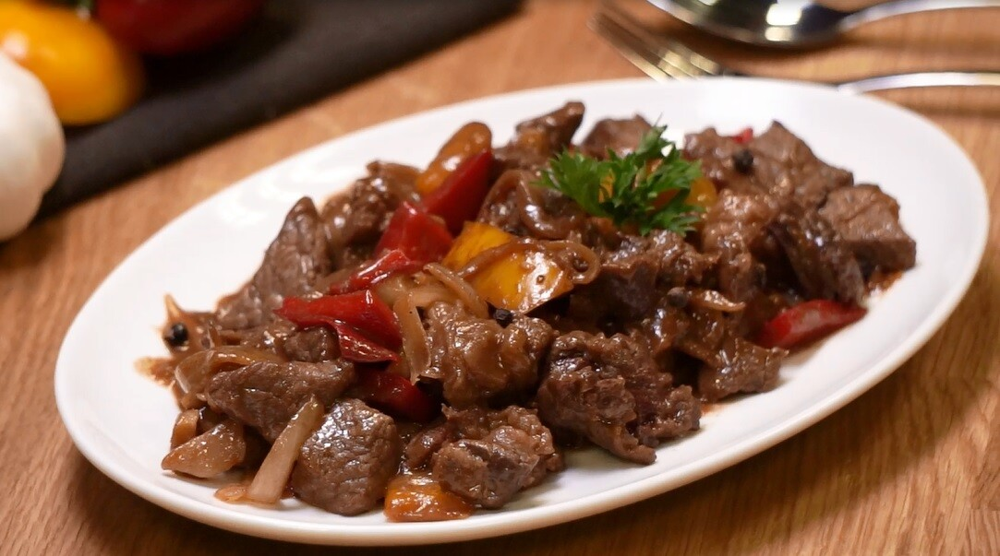

Resep Masak
Daging Sapi Lada Hitam

Bahan-bahan:
- Daging sapi yang sudah dipotong kecil
- 3 siung Bawang Putih
- 1/2 siung Bawang Bombay
- Paprika
- 1 Jeruk Nipis
- Air
- Garam
- Bubuk Lada Hitam
- Bumbu Lada Hitam
- Kecap Saori Saus Tiram
Cara Membuat:
- Panaskan minyak di dalam wajan.
- Tabur garam dan jeruk nipis ke daging mentah yang sudah dipotong kecil-kecil, lalu aduk rata.
- Setelah diaduk sampai rata, masukkan daging ke dalam wajan yang minyaknya sudah dipanaskan.
- Selagi menunggu daging matang, iris bawang putih, bawang bombay, dan paprika.
- Jika daging sudah matang hingga berwarna kecoklatan, angkat.
- Setelah itu, tumis bawang putih dan bawang bombay dengan api sedang sampai harum.
- Jika bawang sudah tercium harum, jangan angkat bawang! Masukkan daging yang
sudah digoreng tadi ke dalam penggorengan dan aduk.
- Setelah itu masukkan saus lada hitam kemudian aduk.
- Tambahkan bubuk lada hitam sekitar 1 sendok teh dan saus tiram, lalu aduk sampai rata.
- Masukkan sedikit air ke dalam campuran daging yang sedang digoreng, kemudian
aduk dan diamkan hingga bumbu meresap.
- Jika bumbu sudah meresap, masukkan paprika yang sudah di potong tadi dan aduk hingga rata.
- Matikan api kompor dan pindahkan daging ke piring. Daging Sapi Lada Hitam siap dinikmati!